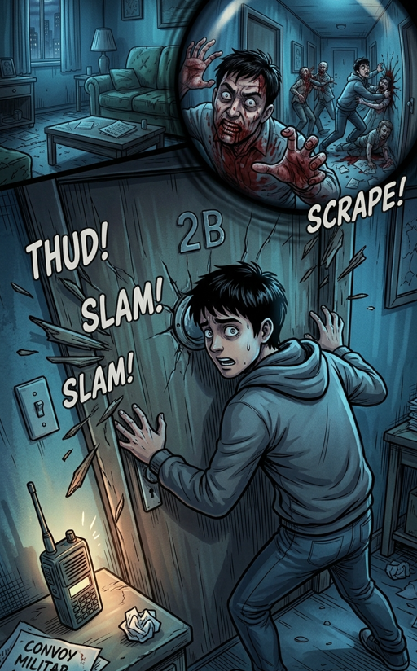

2/3
Camino actual: El Pasillo Infestado
🔊 Narración:
Al mirar por la mirilla, ves a tu vecino cubierto de sangre golpeando salvajemente tu puerta. Detrás de él, sombras rabiosas devoran violentamente a los residentes en el pasillo.
La madera de la entrada comienza a ceder ante la presión. El radio de emergencia emite una señal: un convoy de evacuación militar llegará en minutos a la calle.
♦ ───── ♦